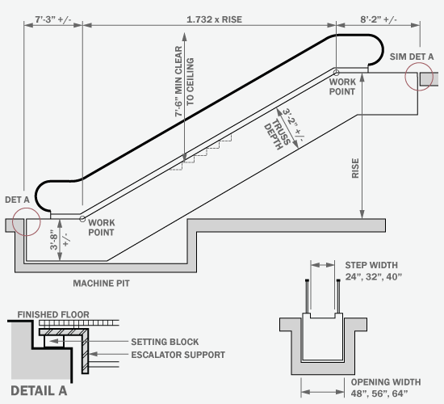
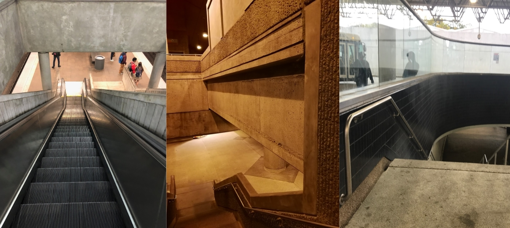
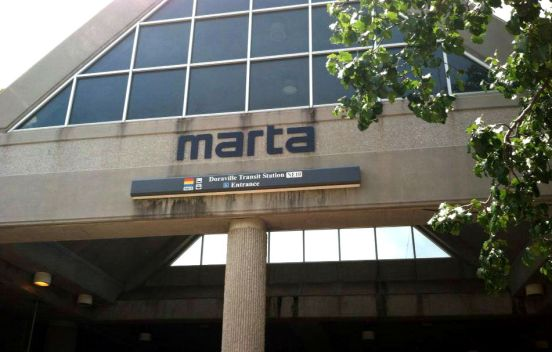
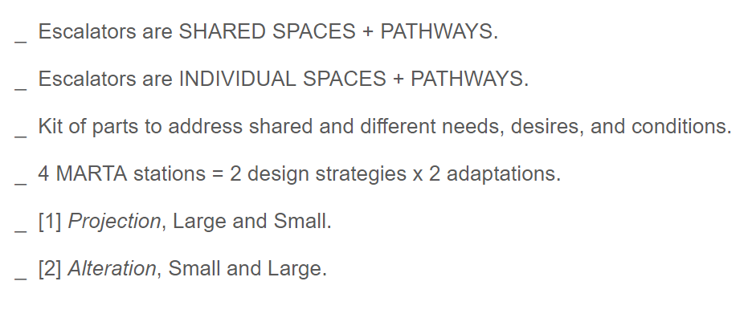
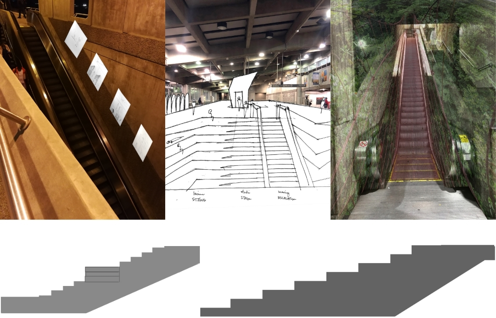
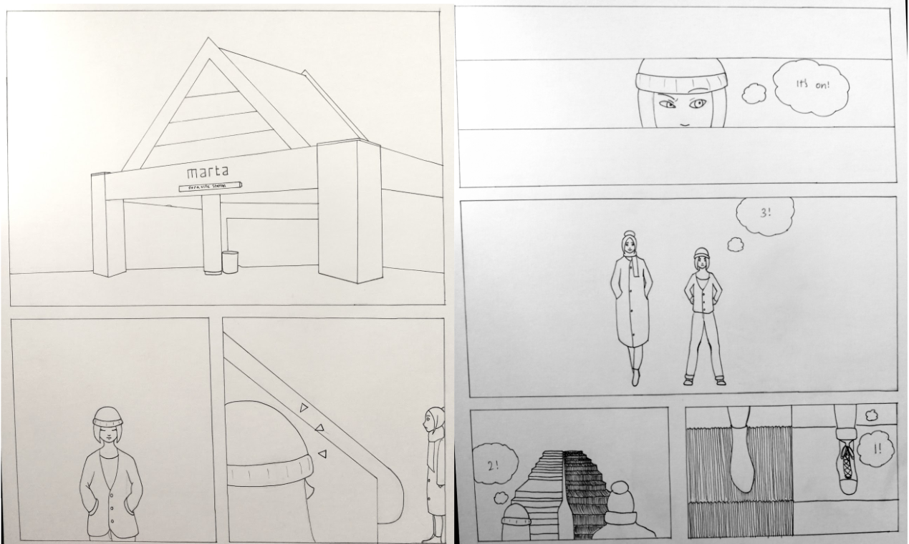
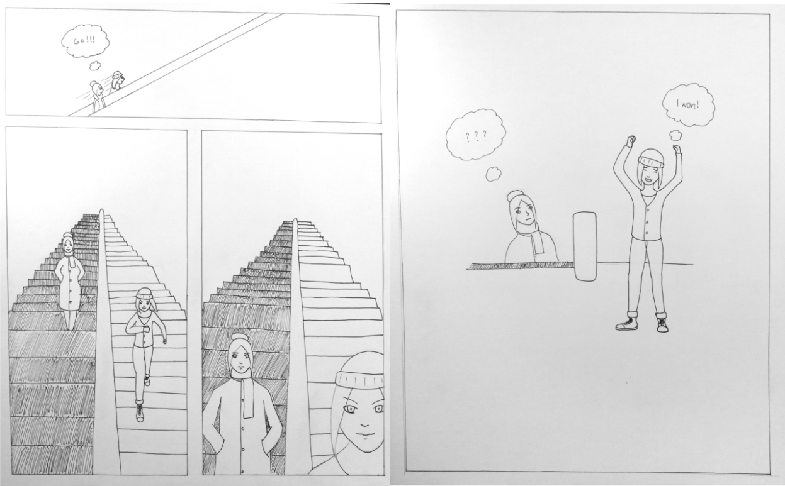
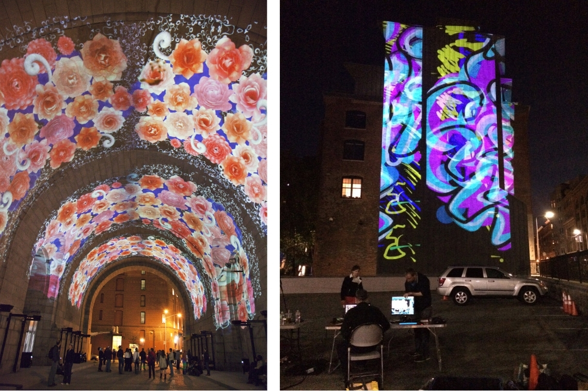
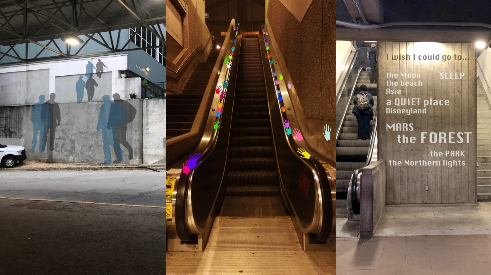

The goal of this project is to design an intervention for a transition space, which my professor loosely defined as any place, physical or mental, where a change may occur. The intervention can serve many purposes, which may include improving, probing, or challenging the space.
During the initial phases of the project, we brainstormed alterations for all three choices of the transition spaces we had to choose from: escalators, Starbucks stores, and crosswalks.

We chose to explore escalators because of the variety of complex interactions that can occur there. Specifically, we engaged escalators situated within the Metropolitan Atlanta Rapid Transit Authority (MARTA) stations to study the dynamic of a transitional space within a transitional space.
Doraville, Midtown, Arts Center, and North Avenue: each of us chose a different MARTA station to explore. In each station, we were looking to examine what ways we could include principles such as autonomy and choice within our design intervention.
We recognized the power of the individual and shared experiences that occur there, so we wanted to design a kit of parts to honor those singular and collective perspectives.
The kit of parts we designed consists of four items: environmental projections, narrative displays, dimensional alternations, and topographical augmentations. True to the nature of the kit of parts, each of these interventions was meant to be interchangeable across all four escalators, and across all escalators in general.
Additionally, each of us wrote a story about our personal experiences with escalators as a means of creating interventions which could leverage others’ individual experience. Here is mine:
"I have a habit of racing people in my head. It gives me a rush of satisfaction if I win. This habit of mine persists into a lot of my daily activities. Can I finish eating this bowl of ice cream before my friend does? Can I walk faster than this person to the Tech Trolley? Can I write faster than the person sitting in front of me? There is no environment or situation that I can’t make into a race. Escalators are no exception. One of my favorite games to play is getting on the stairs while there are stationary people on the escalator and see if I can beat them to the top. Most of the time, I can. Sometimes, I’m not in the mood to race and become one of the stationary people on the escalator. But I do pay attention to the people on the stairs next to me, only to be a little crestfallen when one of them beats me to the top. When that happens, you can surely find me zooming up the stairs again the next day."
And from that story I created my component of the kit of parts: the narrative display.
 
We progressed with our interventions and recognized that there was a need for practicality. We wanted to present a solution that could be implemented in an economical manner. All of us reflected on the kit of parts and decided that it would be beneficial if we narrowed down our four solutions to one. So we decided to focus on projections as a design intervention, with our precedents being works of public art, performance, and graffiti.
With these inspirations, we created projections which engage the shared and individual experiences of the MARTA escalators and their passengers.
The projections I created explored questions such as “Am I alone?”, “What are we doing here?”, and “What do we leave behind?” These questions intrigued me because they can be applied not only to one person but to groups of people. The projections I made to answer them serve as a reminder that sometimes even everyday acts such as riding the escalator can change perspectives and elevate experiences.
"Everyone has their own commute, but there is a brief moment where they are all together here. This atmospheric projection is meant to be a meditative space. A reminder us that we are all experiencing the same situation alone, but together."
"We want to draw attention back to the escalator itself rather than the spaces around it. An evocative quote or phrase can be projected on this side rail of the escalator. Since the words are positioned so that they are in the same direction that the escalator riders are moving in, reading them will not be dangerous to the users. The poem here, by Thoreau, reads 'My life has been the poem I would have writ But I could not both live and utter it.'"
"Hands are a very public part of our bodies. They are used to connect with the people and the world around us. When we interact with spaces, we leave things behind that we cannot always keep track of. This design intervention lets us see the traces we leave behind and allows us to make space for people to join after us. It lets them know that many have embarked on the same journey that they are on and that everything will be alright."
The next logical step with this project is to create a prototype and test it on a small scale (i.e. use a local staircase before trying it on a MARTA escalator).